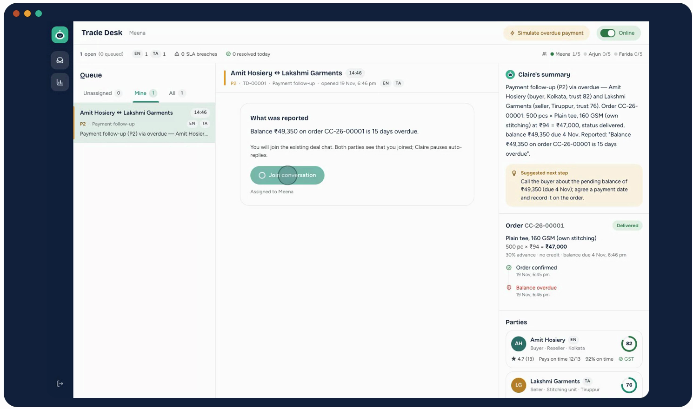

One chat app for India's knitwear trade, in everyone's own language. Built on the Nexconn Chat SDK. Team Coders · Track: Marketplace & Support · Nexconn Build Challenge 2026
Nexconn App Keym7ua80gbmcvhm
Live appclaire-connect.onrender.com
Sourcegithub.com/nandini-kuppala/claire-connect
Try it (demo logins)Amit · Lakshmi · Murali · Meena
Why we built it
One of our team's families runs a garment unit in Tiruppur. It buys fabric, cuts in-house, sends the pieces out to stitching units, packs in-house, and sells to shops across India. Every step of that runs on phone calls, WhatsApp photos and memory. Buyers in the north speak Hindi; the stitching units speak Tamil. When 400 pieces go to a stitcher and 398 come back, nobody can prove which number is right. We built CLAIRE Connect so that a small business like this can find buyers, close deals across languages, and track every piece of an order, all from one chat app they already know how to use.
The problem it solves
Tiruppur is India's knitwear capital: a record ₹46,000 crore of exports in FY26, with a target of ₹1 lakh crore by 2030 (Tiruppur Exporters' Association, via Business Standard), and an estimated ₹35,000 crore sold inside India. About 95 % of its units are small businesses. Yet the trade still works the way it did decades ago:
Trade fairs and middlemen. Buyers travel to Tiruppur to see the goods. Those who cannot, buy through local wholesalers and resellers, paying more at every step.
Unsold stock. Makers over-produce and sit on stock: in one festival season, about 70 % of garments sold came from old stock (TEMA, via DT Next).
Selling one WhatsApp chat at a time. A seller sends the same photos to ten buyers a day and chases each one by phone, often without a shared language.
No shared record in production. One order passes through about eight businesses (knitting, dyeing, cutting, printing, stitching, packing). Goods go back and forth on paper challans, and nobody can see where an order really is.
What CLAIRE Connect does
1. Find, negotiate and order (the track)
Claire, an AI trade assistant. A buyer types or speaks a request in any of 10 Indian languages. Claire finds makers and ranks them on price, trust, stock and delivery.
Live, translated deal rooms. The buyer writes in Hindi and the maker reads it in Tamil; her reply arrives in Hindi. Samples, offers, counter-offers and orders with GST are cards in the chat.
Private price tips. Ask for a discount and Claire tells only you that sellers usually settle 3–6 % lower, with a one-tap opening offer. In the demo, a ₹98 listing closes at ₹94 for 1,000 pieces.
Ratings both ways. Buyers rate makers on quality, value and delivery; makers rate buyers on paying on time. Both feed a trust score.
Trade Desk. When something goes wrong (a late payment, a short delivery), a human agent who speaks the right language joins the same chat, reads what happened before, and sorts it out.
2. Track production after the order
Every hand-off in seconds. Send for work, got back, sales and returns, typed, spoken or told to Claire. Each record arrives as a card in the chat between the two businesses.
Confirmed by both sides. The receiver confirms what actually arrived. A difference is shown to both and settled, never silently overwritten.
Flow view. For each style or order: progress, where every piece is right now (at which unit, in the shop, on the way, with a buyer), each stage, and each buyer.
A private Claire. "How much is still at Priya Stitching?" Answers come from the business's own records, in Tamil, Hindi or English.
Deal room: a counter-offer card, and Claire's tip that only the buyer sees.The same deal for the seller, in Tamil, with the order card and GST.Flow view: where all 500 pieces of a style are right now.
Features that use the Nexconn SDK
App Key: m7ua80gbmcvhm. Every conversation in the app runs on Nexconn: the web Chat SDK (@nexconn/chat with @nexconn/engine), the Call SDK (@nexconn/call) and the Nexconn Server API. Each app user is a Nexconn user; Claire, CLAIRE Updates and the Trade Desk are Nexconn users too.
Nexconn feature
Where the app uses it
Direct channels
Each user's private chat with Claire (search, questions about their own records, record drafts). Claire replies through the Server API.
Group channels
Every buyer-seller deal room, the Goods chat between two businesses, and support rooms. Created server-side; a Trade Desk agent is added to the same group when they join.
System channel
"CLAIRE Updates": order, payment and dispatch notices.
Custom messages
CC:Card (offers, counter-offers, orders with GST, samples, goods hand-offs, differences), CC:Hint (private tips), CC:Reply (quick replies), CC:Voice (voice notes with transcripts). Cards update as a deal moves on.
Targeted messages
Claire's private price tips go to one member of the deal group only; payment reminders go to the owner only.
Translation module
translateModule with a custom handler: every chat is shown in the reader's language, across 10 Indian languages.
History, unread, read receipts, typing
Chat list with the latest message and unread count; earlier messages page in; read receipts when a chat is opened; typing indicators in deal and support chats.
Webhooks
message:send (signature verified): Claire's replies, price detection, escalation to the Trade Desk, and a group archive so a late-joining agent can read what came before.
Call SDK
One-tap 1:1 voice and video calls from a deal room and from the Trade Desk console, with a call summary card posted into the chat.

Trade Desk console: the queue, a ticket with an AI summary, the shared deal chat and the order.
How it is built
Stack: React 19 web app (Vite, Tailwind) and an Express + TypeScript API on Render; MongoDB Atlas; LLMs through OpenRouter with a rules fallback; Sarvam AI for speech in Indian languages.
Goods ledger: double-entry, written in one transaction per record, so every piece is always accounted for. Who owns goods and where they physically are are kept separate.
Tested: unit tests, 15 end-to-end scripts (including isolation between businesses), and a stress test of 30 concurrent Nexconn connections: 308 messages, 0 send failures, median delivery 317 ms.
For budget phones: offline outbox and cached app shell; every main screen ready in under 2 s on a 4×-throttled phone over slow 4G.
Built during the challenge: the repository starts on 19 Nov 2026. Two full real-world scenarios (15 businesses) are seeded on the live site for judges.
Who it is for, and where it goes next
Users: Tiruppur's small makers, job-work units, fabric and trims shops, and their buyers across India. Many are Tamil-first and use budget Android phones.
Business model: free for small units; a paid tier for multi-unit manufacturers (production tracking, reports, staff accounts); a small fee on orders closed in a deal room.
Next: a pilot with one full Tiruppur chain (yarn → knit → dye → cut → stitch → buyer), WhatsApp share links for partners not yet on the app, and native review of all translations.